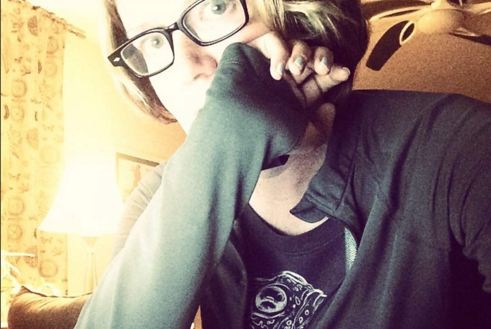

So Yeah, Hi
Hi. I'm Morgan.
I'm an ex graphic designer and signmaker who drank the RGB kool-aid® in 2010 and hasn't looked back since.
I live in Denver with my husband (ex chef and now also programmer) and our two shiba inus and two cats.
 Hey. What up.
I currently work for LivingSocial. I do mostly front end development but also dabble in the back end when I want or need to. Front end appeals to my design background and desire to reach the user. I really really love what I do. I'm grateful every day I chose a new career path that brings me a great deal of personal satisfaction.
Anyway enough about that. I get asked by recruiters and other programmers what open source I contribute to or what type of stuff I sandbox and really, I don't. 40 – 50 hours a week I eat, live, and breathe code. Outside of that time, I do a LOT of other things that I think contribute to my overall radness as a person. Specialization is for insects.
Non code related stuff I like: Dogs, whiskey and bourbon, craft beer, lifting weights, hiking, running, driving and occasionally racing my BMWs, cooking ridiculously awesome food, crafting killer cocktails, taking road trips, drawing, reading, aquariums, going to museums and such. Probably lots of other things but you get the idea.
I'm creating this blog in an attempt to do a few things:
- An outlet for my creativity. Things I learn, do, think, in a positive way.
- Try to move away from things like Facebook and Instagram for keeping a journal of my life.
- Keep a blog without a traditional CMS. I am using Octopress for this and it feels very grown up techy and I like that.